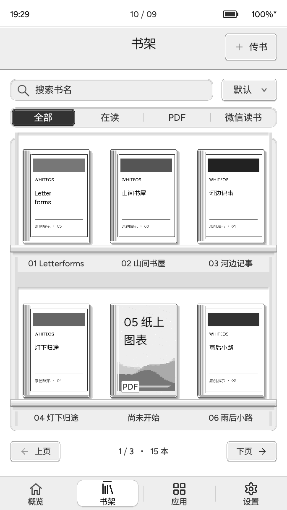
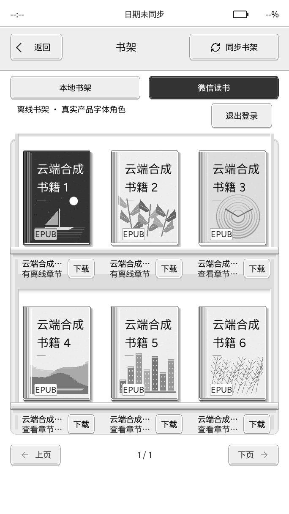
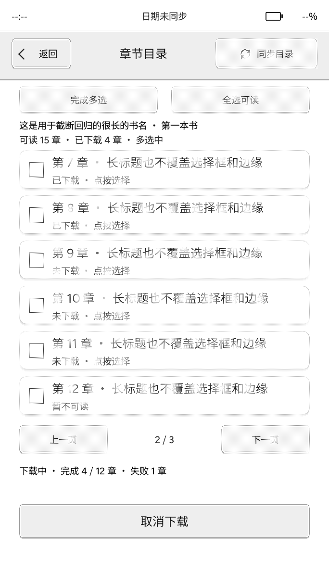
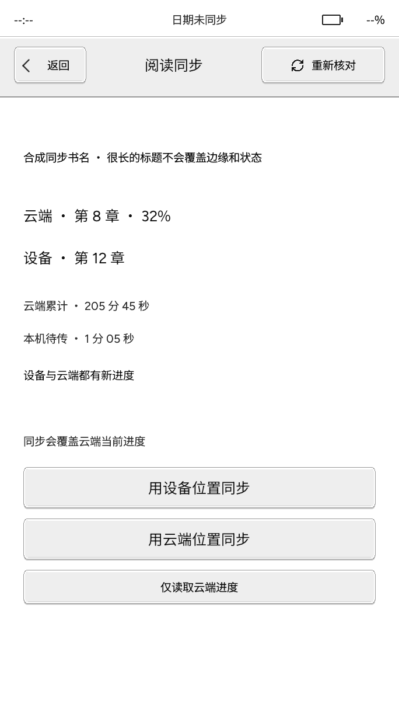
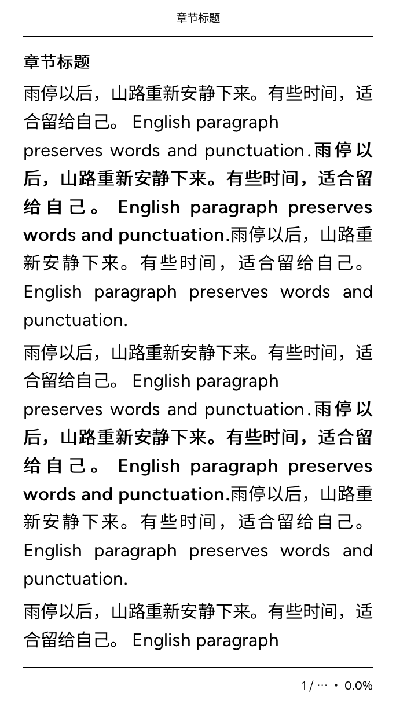
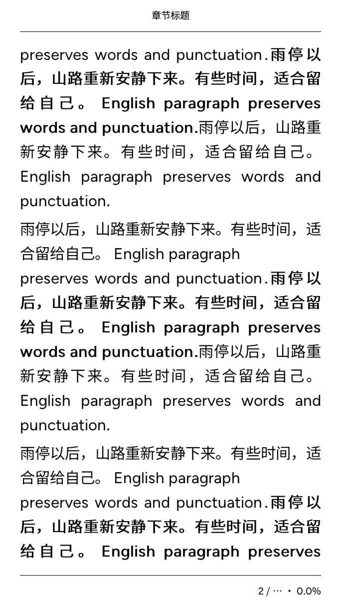

少一点等待，多读几页。
不必等整本书处理完，先从想读的章节开始。流式解码按章处理，配合下一页预绘，把等待留得更短，让阅读接得更顺。
- 按章流式解码，不一次处理整本书
- 页面缓存与下一页预绘，减少重复等待
- 文字与常见插图，目录、书签和进度
章节准备完成后排版；实际等待因书籍与设备而异。
小纸 Pico 阅读固件 阅读，简单一点。
把阅读，还给自己。
一整个书架。
一小片安静。
读进去，
也记得住。

LESS NOISE. MORE PAGES.
让手机里的书架来到墨水屏，让随身的文档找到自己的位置。
换一种喜欢的字体，接着读；打开一副牌组，每天记住一点。
01 微信读书 / WEREAD
双向进度同步，接上每一次阅读。
阅读时间同步，也留下墨水屏上的专注。
扫码登录后，在同一个书架里切换本地图书与微信读书。封面、目录和继续阅读，都在熟悉的位置。
按书下载已授权章节，也可以挑选想读的部分。下载完成后离线阅读，读到章末继续下一章，不用来回退出正文。
双向同步手机与小纸的阅读进度，并同步设备新增的阅读时间。两端都往前读了，就由你选择接着哪一处读；也可只取回云端进度。
同步需手动确认，并非后台自动上传。非官方接入，仅限已授权内容；设备→云进度及阅读时间上传仍在验收，批注暂不云同步。



固件主机渲染 · 合成数据 · 非实屏录像
02 本地阅读 / YOUR LIBRARY
不必等整本书处理完，先从想读的章节开始。流式解码按章处理，配合下一页预绘，把等待留得更短，让阅读接得更顺。
章节准备完成后排版；实际等待因书籍与设备而异。
让文档保留自己的排版。整页看全貌，放大看细节，旋转或平移到舒服的位置；翻页和跳页都各就各位。
复杂或超出容量的 PDF 可能无法打开；中文字体需由文档内嵌。
Wi-Fi 浏览器传书，或 USB 磁盘复制。
本地阅读不需要始终联网。
03 TTF 实时解码 / MAKE IT YOURS
把喜欢的 TTF／OTF 字体放进 TF 卡，在排版菜单里切换。
实时解码需要的字，无需提前转换整套字库。
宋体的温柔、黑体的利落，阅读有自己的语气。
实时解码 · 按需字形 · 随心换字体
字号、字重与抗锯齿，一起调到舒服。
04 翻页动画 / ONE MORE PAGE
水波纹条带沿竖向推进，新内容原位覆盖。
文字不滑动，下一页随着波纹逐段清晰。
684 × 1216 完整画面，按屏幕比例等比显示。
标准档可选动画，快速档不运行动画；网页示意不代表实屏速度或残影。


固件主机渲染 · 合成数据 · 水波纹覆盖示意
05 ANKI 牌库 / A LITTLE EVERY DAY
让碎片时间，变成一点点积累。
导入自己的牌组，在墨水屏上专注回忆。
独立离线学习，不连接 AnkiWeb。原牌组复习历史不迁移，复杂脚本与音视频模板不支持。
/ˌser.ənˈdɪp.ə.ti/
在没有期待的地方，遇见值得珍惜的事。
今天的三张卡片，已经完成。
一点点，也是在向前。
原创示例牌组 · 网页演示
GOOD TO KNOW
功能说明依据 2026 年 10 月 9 日产品工作区源码。
实现、主机回归与真机验收，是不同的状态。
当前提供手动阅读位置与新增阅读时长同步，以及仅下载云端位置。两端位置都有更新时，需要用户明确选择。个人批注暂存本机，不同步到云端。部分书籍的位置无法准确匹配时会停止同步，而不是猜测位置。云→设备的位置下载已有受控真机验证；设备→云的位置与时长上传仍在验收。
本地阅读支持 EPUB 与 PDF。EPUB 支持文字和有范围限制的 JPEG／PNG 插图，并不复现所有复杂网页排版。PDF 保留固定版式，复杂、超容量或缺少内嵌中文字体的文件可能无法正确打开。Anki 需导出兼容旧版本的 .apkg；导入后从本机新卡开始，不迁移桌面复习历史，不连接 AnkiWeb。
开发版中，EPUB／TXT 双指捏合调整字号，松手后从当前阅读位置重新排版；PDF 调整页面比例，以手势中心附近的内容为缩放参考。移动时可预览当前页面，松手后提交最终绘制；资源不足时可能只有松手后的结果。该功能尚未发布，实际延迟与残影需实体屏验收。
不是。书架、微信读书与阅读菜单界面图由实际固件绘制函数在主机上生成，使用合成数据。阅读、缩放、字体、翻页和牌组交互为网页示意；外框也不是实物外观承诺。它们不代表屏幕光学效果、续航或实测延迟。具体功能仍需逐项真机验收。